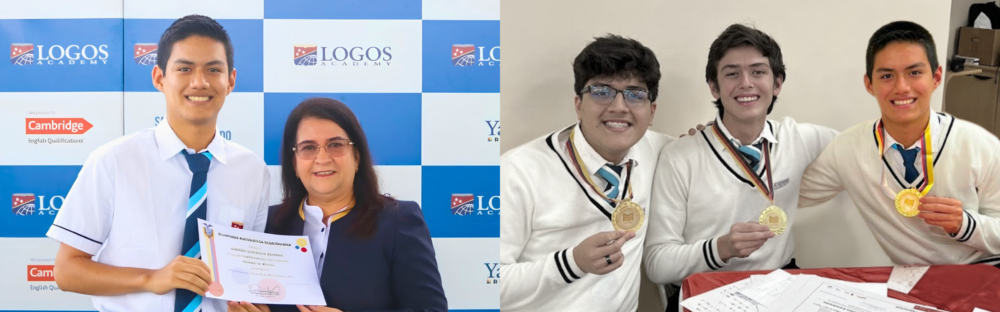
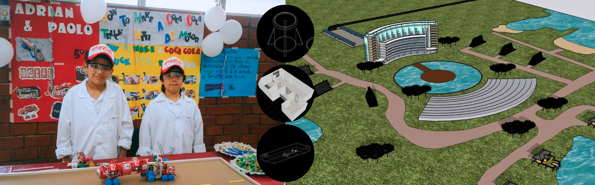
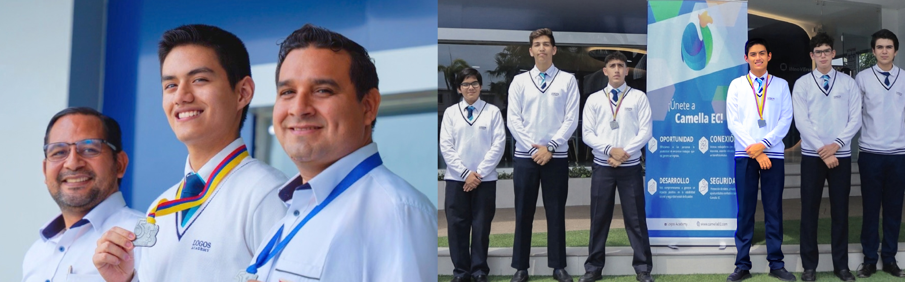
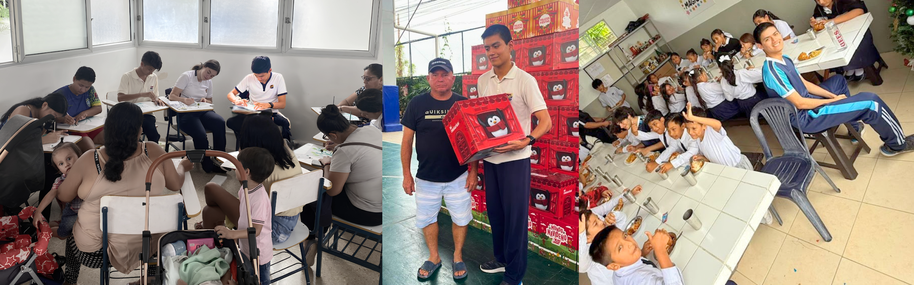

In every other classroom, I was the student who made work look effortless. In the math club, I felt quiet humiliation. Three teammates kept collecting gold medals while I was struggling to place. I showed up to practice having already accepted defeat.
In ninth grade, my teacher put my name on the varsity roster. I went to his desk to ask about it. He looked up and said:
"Because I see the potential in you."
We won first place. My score was nowhere near the top, and the medal I had barely touched made me feel sick. I could not look him in the eyes. He had bet on me, and I had handed him a win I did not earn.
I went to the camps, eight hours a day, and solved the hardest problems myself instead of waiting for teammates. I worked through past exams until my notebooks tore and drilled every geometry and number theory proof I had been avoiding.
In tenth grade I won an individual bronze at OMEC. The next year our team won the national championship, and I knew which problems were mine. He said nothing about it, and I did not need him to.
Drive there ↗
The Coca-Cola truck I built rolled across the classroom floor when the headlights lit up and the small motor caught. That fourth grade project was my first exposure to physical circuits: batteries, a switch, and raw wiring that made an object move on its own.
Years later, the right bumper on my Xbox 360 controller stopped registering. I opened the shell to find the cause. The plastic leg of the RB button had worn down, so it no longer reached the small switch on the board.
I had no 3D printer to make a replacement, so I rebuilt the missing length with silicone until it clicked again. I still use that controller.
That same habit showed up in digital drafting. In eighth grade, I used SketchUp to design a pedestrian bridge, pacing out real walkways at dismissal to check railing heights and clearances against crowded foot traffic. On my own, I used AutoCAD to draft model rockets and controller shells for fun. For a business class, I built a full hotel model in SketchUp, taking the site's real dimensions from satellite images.
The hardest measuring job came with this portfolio. I wanted the car's jump to look accurate instead of hard coded, so I marked every coordinate of its route in Blender, then corrected for the way Blender and my code define the X, Y, and Z axes differently. Geometry I once solved on notebook pages now runs as code in the scene around this page, built in Three.js with models I made in Blender.
Drive there ↗
In 2011, a farmer in Colimes told the newspaper El Telégrafo that he was paid seventy cents for a large bunch of green plantains, which retailers sold for three dollars at the local market. He said the buyers who came to his farm would not purchase at all unless he accepted that price.
"So we are forced to give in."Pedro Ochoa, farmer in Colimes, El Telégrafo, 2011
For that one bunch, the increase is over 320 percent. Agriculture is a pillar of Ecuador's economy, yet the farmers who feed the country often keep a small share of what their harvest sells for. That made me angry, and I wanted to test a direct alternative. I built Verduléate by myself: a zero commission web marketplace prototype that connects growers directly to household buyers, with catalog listings, real time order inquiries, and no middleman surcharges. It won first place at the 593 Challenge.
The year before, my team won first place at the same summit with Camella EC, an open labor platform addressing contract informality. According to INEC, over four million people in Ecuador work in the informal sector without contracts or benefits. We built a platform that matches tradespeople directly with household jobs and guides independent workers through registering for voluntary social security.
Source: El Telégrafo, 6 November 2011, "La intermediación afecta el precio de los productos".
Drive there ↗
While volunteering to serve school lunches in a low-income community in Guayaquil, I was handed dented aluminum bowls that looked like pet dishes, and tarnished metal cups. Ladling hot moro (rice cooked with lentils and cheese) and fried chicken into them felt completely wrong.
At home, my meals arrived on ceramic plates with clean silverware.
I wrote poetry about people whose situations I could not change by serving a meal. In our school's literary competition, centered that year on the crisis in Afghanistan, my Spanish teacher encouraged us to enter. I submitted a poem about families fleeing their homes at night and hiding at checkpoints, which earned second place in the contest.
Later, I returned to that same community to organize Pinceladas y Pliegues (Brushstrokes and Folds). In workshops, I taught painting and origami techniques to parents so they could share the craft with their children. During one session, a mother smoothed a sheet of blue paper with her thumb until the creases sat sharp, telling me her daughter had never owned an art supply of her own. She folded three paper cranes to place on her daughter's bedside table.
Drive there ↗